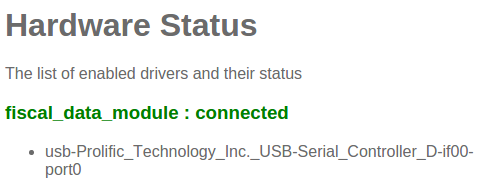

Введение
Бельгийское правительство требует от определенных предприятий использования сертифицированных государством устройств, так называемый Модуль Фискальных Данных (также известен как черный ящик). Это устройство работает совместно с РМК и записывает ряд операций. На вершине этого используется приложение РМК, которое также должно быть сертифицировано государством и должно придерживаться строгих стандартов, установленных им. Odoo 9 (Enterprise Edition) сертифицированое приложение. Более подробную информацию о модуле фискальных данных можно узнать на официальном сайте <http://www.systemedecaisseenregistreuse.be/>`_.
Требуемое оборудование
Сертифицированный государством Модуль Фискальных Данных на одно РМК, все они должны работать, но рекомендуется Cleancash СК-Б, также необходимо:
Настроенный и подключенный POSBox на каждое РМК
Настройка
POSBox
Для того, чтобы использовать Модуль Фискальных Данных, вам понадобится зарегистрированные POSBox. Эти POSBox похожи на обычные POSBox которые мы продаем, но они зарегистрированы правительством Бельгии. Это требуется по закону. Попытка использовать модуль фискальных данных на незарегистрированном POSBox ни к чему не приведет. POSBox работать небудет. Вы можете убедиться, что модуль фискальных данных распознается POSBox на странице о состоянии оборудования через домашнюю страницу POSBox.
Odoo
Приложение РМК может иметь возможности сертифицированных кассовых систем при установке приложения Бельгийский Зарегистрированный Кассовый Аппарат (техническое название: [UNKNOWN NODE title_reference]). Из-за правительственных ограничений, наложенных на нас, эта установка не может быть отменена. После этого, вы должны убедиться, что каждая конфигурация РМК имеет уникальные регистрационные данные для POSBox связанного с ним (:menuselection:[UNKNOWN NODE problematic]Рабочее Место Кассира --> Конфигурация --> Рабочее Место Кассира Аппаратный прокси / POSBox и серийный номер вашего POSBox имеет установлен). Первый раз, когда вы открываете Рабочее Место Кассира и попытаетесь начать совершать продажи, вам будет предложено ввести пин-код, который вы получили с подписанной картой НДС.

Сертификация и владение
Сертификат, выданный правительством ограничен на использование экземпляра SaaS на odoo.com. Использование модуля из другого источника или использование модифицированной версии будет не сертифицировано. Для пользователей локальной версии мы также поддерживаем модуль фискальных данных и в такого рода установках. Основное ограничение заключается в том, что для этого требуется обфусцированная версия модуля pos_blackbox_be, который мы предоставим по запросу для корпоративных клиентов.
Ограничения
Как упоминалось ранее, для того, чтобы получить сертификат на РМК-приложения должны придерживаться строгих государственных стандартов. Из-за этого, Odoo c сертифицированным РМК имеет некоторые ограничения которых нет в не сертифицированной версии.
Возврат товара отключен
Изменение позиций чека
Создание/изменение/удаление РМК чеков
Продажа товаров без правильных налогов
Работа нескольких РМК с одним POSBox не поддерживается
Использование РМК без соединения с POSBox (и МФД соотвественно)
Модули занесенные в черный список pos_discount, pos_reprint, pos_loyalty